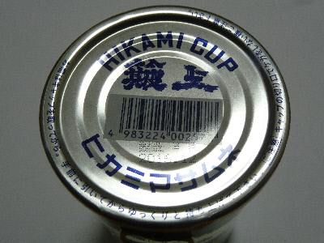
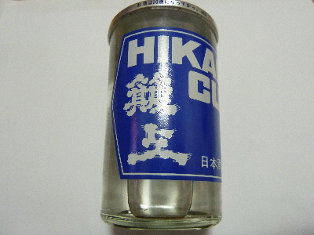

更新日 : 2017/04/08
ワンカップの簸上正宗です。

上蓋が無いタイプなので、開けたら飲みきらないといけませんね。
アルコールに強くないので、飲むぞ！って気分じゃないと蓋を開けれないです。

お酒は、味が濃いめかな。味はしっかりしてるんですが、クセがないので飲みやすかったです。
甘いお酒でした。
【おいしいものを食べよう。】【たくさん寝よう。】
【ソロ活をしよう!】【季節感のあることをしよう。】【動画視聴はほどほどに。】【当サイトの全てのコンテンツは無断転載禁止です。】